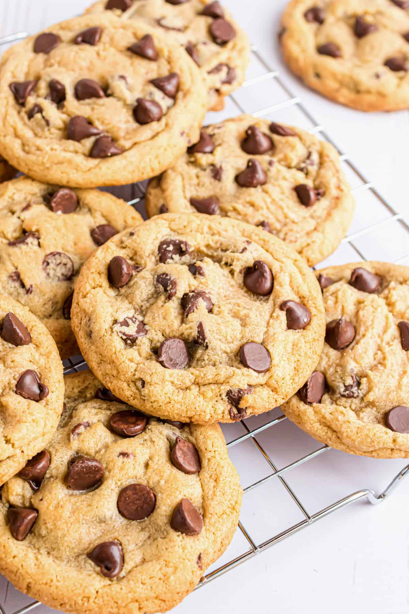

|
|
 | |
Preheat the oven to 375 degrees F and grease your cookie sheet.
Combine flour, baking soda and salt in a small bowl.
Beat butter, granulated sugar, brown sugar, and vanilla extract in a large bowl until creamy. Add eggs one at a time, beating well after each addition.
Gradually add the flour mixture into the large bowl. Stir in chocolate chips.
Create balls of cookie dough about 1 inch wide and place them on the greased cookie sheet.
Bake for 9 to 11 minutes or until golden brown. Allow cookies to cool when taken out.